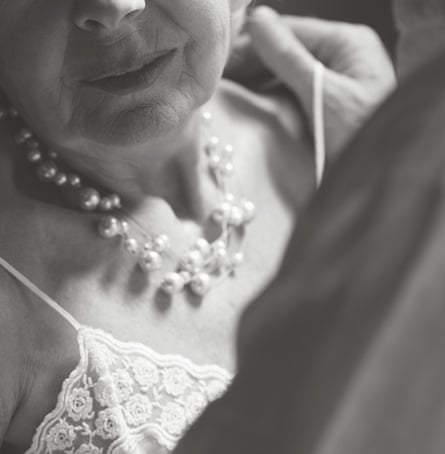

There is a stereotype that sex is just a young person’s game. But the numbers don’t back that up.
“That is not what we’ve found in our studies,” says Dr Cynthia Graham, senior scientist at the Kinsey Institute and distinguished professor in gender studies at the University of Indiana.
Numbers vary widely, Graham says, because different studies define sex differently; some define it exclusively as sexual intercourse, while others define it more broadly. According to research by Graham and her team, the percentage of men aged 65 to 75 who are sexually active is anywhere from 40% to 91%. For women, it’s from 25% to 78%.
The numbers also fluctuate based on culture, religion, education, romantic status, health and the country in which one lives. Graham’s research has shown that older adults in Norway have more sex than those in Portugal, for example.
Not only are older adults having sex – they’re having good sex. According to the National Institute on Aging (NIA), “many older couples find greater satisfaction in their sex lives than they did when they were younger”.
Ageing comes with physical changes, but that doesn’t mean the end of pleasure. Graham says that in her group’s research, older adults said changes in physical function “didn’t really impact their satisfaction”. They reported doing things differently from before, with less focus on penetrative sex.
Below, Guardian readers over 60 share how their sex lives have changed as they’ve aged.
Two old farts having sex
I’m 70, and my wife is 72. We have sex three times a week, more if we feel like it. We laugh when young people realize – and are appalled by – two old farts still having sex. Or, as we describe it: “Shar-pei sex.”
When we were younger, sex was plentiful, frantic and more shallow, but good fun. Now that we’re older, it’s more measured, more valued. We both appreciate the subtle and aesthetic aspects more than when we were younger. Lee, 70, and Patricia, 72, Maine
Ten orgasms in an afternoon
I always enjoyed sex, but as a full-time high school teacher and single mother of one, I was overwhelmed and very busy.
Fast-forward to living alone: I have had several lovers, and at the age of 71, I am having the best sex of my life. I joke with friends about my three fully charged vibrators that I use in conjunction with a chocolate edible. I watch porn – girl-on-girl and hetero sex. I can orgasm 10 times in an afternoon. I also regularly have sex with a man my age. We usually have sex three times per encounter. I call it my 9pm, 3am and 9am. It’s fabulous.
‘I think of sex as part of my self-care. I think it keeps me youthful.’Composite: KatarzynaBialasiewicz/he Guardian/Getty Images
I think of sex as part of my self-care. I think it keeps me youthful. Anonymous, 71
I prefer older women
I have sex as often as possible with my lover. She is 67. I use Viagra for erectile dysfunction, and have for years. I still enjoy sex very much, and so does she. I prefer older women who know what they want. Anonymous, 64
Use it or lose it
I’ve been very happily married to my wife for 35 years. We have sex anywhere from once to three times a week. Sometimes a week or two go by [without sex] and that’s not a big deal. Intimacy is more than sex. We have lots of laughs, we chase each other around, we cuddle and have a blast.
Our sex has become even less inhibited, more exploratory. Not that we were inhibited in the past – we’ve had sex pretty much every place you can imagine. But now there’s somehow more freedom and abandon. We use toys, we don’t worry if one of us doesn’t climax every time and we can, with a few creaks, bound around into different positions.
“Use it or lose it” is something we tell people who are struggling sexually with their partners. When someone says they haven’t had sex with their partner in a long time, we say: “Put on your mining helmet and get to work.” JB, 64, New York
My shortest post-marriage relationship lasted 10 minutes
My marriage of 30 years ended three years ago. Since the split, I have had multiple partners. Usually younger men. I have the best sex of my life. I’m post-menopausal and cannot get pregnant, both of which are great for sex. My longest post-marriage sexual relationship lasted six months, and the quickest, 10 minutes. I like to be free and single, but I do like a secret lover.
I’m more body-confident than when I was 30. I’m able to express my desires and needs as men always have. I no longer use alcohol to drum up courage. It’s so much better. I really see sex as a hobby. Anonymous, 60
Twice a night, sometimes
I’m 77, and my husband is 8 years younger. I met him in 2019, a year after my husband of 50 years died. Previously, I had been celibate for 25 years because my first husband’s health wasn’t good, but I missed sex. It is wonderful to be with an affectionate, uninhibited, patient and sensuous man now. We have sex every two to three days, sometimes even twice a night.
Time is the difference. Now we can spend as long as we want in bed. In my first marriage, we tended to be efficient at sex. Straight for the goal. When I met my second husband, I knew I wanted a healthy sexual relationship. I love his moves and his fascination with my body. I love the texture of his skin and his smell. Sex is a form of communication for us. Anonymous, 77
No worries about pregnancy
I have one long-standing partner. We’ve been in a casual relationship for decades. Sex has always been great between us, but now it’s even better. Fewer inhibitions, more time, no worries about pregnancy or how I look. With age comes more confidence. Anonymous, 65
Quality over quantity
I am married and have just one partner. Our frequency of sex is highly variable. Sometimes it’s five times a week, and sometimes there’s a month without.
Sex changed significantly after age 55-60. In that time, stress lessened in a number of areas of my life. The biggest change was realizing I didn’t need to worry about how people perceived me. I’m confident in who I am, and that has been a big boost in my sexuality.
Do not let your sex life stagnate. As my stamina has decreased, I have learned to compensate with expertise in pleasing a woman. It has become more of a sensual journey. Quality is more important than quantity. Marc, 69, Idaho
Time and marijuana gummies
I have one partner, and we have sex twice a week. It’s scheduled, because I take ED pills. This is the best sex ever, even though we are more physically limited.
During the pandemic, we had time and marijuana gummies. We began to have sex for two to four hours. She has more orgasms than I do. Anonymous, 82
A man’s needs and desires wouldn’t fit into my life
My sex life is wonderfully non-existent. Five years ago, after 40 years of committed monogamous relationships, I stopped looking for partners. My relationships with friends and family are deeper now, and my solitary time is profoundly rewarding. It has been the best, most fulfilling and expansive period of my life. I can’t see where a man’s needs and desires would fit into my life. This may change, but it is simply not part of my routine or schedule right now. Anonymous, 68
Playing the field
In a 27-year relationship, sex had faded to nothing. He didn’t make an effort, and wouldn’t discuss it either. I left him seven years ago, and had a few years of playing the field, mostly with swingers. One was 50 years younger than me. Great fun.

‘The pleasure and transcendence between lovers is what matters – the exchange of energy.’Composite: The Guardian/Getty Images
The 27 years of suburban monogamy were not my true nature. Now, I’m with a guy who loves sex and variety as much as I do. We have sex every day, sometimes with other couples or at swinger events. I’ve returned to the libertine spirit that I had. Anonymous, 77
The effects of ageism
Until 65, my sex life was very good. I had several lovers, and rarely a day went by without sex. Then I had several bouts of Covid and some long-term after-effects, and I’ve not been as sexually active since.
Now, I seem to have a block. I miss intimacy but also shrink away from it. The men that are interested in me tend to be 15-20 years younger, and this is a little unsettling. This wouldn’t have bothered me in the past, but now I feel strange about it. In theory, I feel good about myself and the ageing process, but in reality, the ageism in the US has a negative effect on my psyche. In the US, intimacy in later years is treated like a bad joke by many or at best an opportunity for capitalism to exploit with pills and creams. I don’t feel this way when I’m in France.
The best advice I have is to know and love your body and not be influenced by media or porn or anything that is designed to make you feel less than. You are enough. The pleasure and transcendence between lovers is what matters – the exchange of energy. Tara, 69, California and France
Having a laugh
After I turned 60, I stopped worrying that ED would ruin my ability to enjoy sex. I’ve tried all the pills and even injections, but nothing works. So we enjoy naked time together.
My relationship to sex used to have a transactional element – you do this and I’ll do that. Then, it was appreciation of another man’s body and my own. Now, it’s more about having a laugh, making out and hand stuff. Pete, retired, California
Unbridled enthusiasm
After two kids, four divorces, two malignancies and a life-threatening illness between us, we find ourselves happier than we ever dared dream. We have stumbled upon the key: the most important erogenous zone is between our ears. Constant unbridled enthusiasm for every type of intimacy makes us feel completely satisfied. We decided to put our lust for each other front and center. Every outing is a date. Every drive is an opportunity to kiss before attaching the seatbelt. We’re in our third decade as lovers, and every day is better than the last.
Our best advice: showing unlimited enthusiasm for your partner will keep them coming back, no matter what life throws at you. Bob, 75, and Candy, 70, Ohio
ED? No problem
I met my now husband 10 years ago, courtesy of this newspaper. I had been married twice before, and he three times. After we first made love, he said I had given him his sex life back. He has a long-term medical condition that means he cannot get an erection. We have a deep and loving sex life with no penetration, and I have never felt as loved and fulfilled as I do now. We don’t need sex toys, just tongues and fingers. It’s wonderful! Anonymous, 73
Enjoy the journey
I couldn’t be happier. I am 83 and I am enjoying a wonderful retirement with a girlfriend who is also sexually active. My first wife passed away in 2006, after 41 years together. My second marriage lasted for seven years until I bailed out. I was an unhappy bachelor until I met my current girlfriend. She is 84 and I consider myself blessed. She is a wonderfully communicative partner. We have sex one to two times a week.
There is no reason to be ashamed of your body and whether you are “hung” or not. Be happy with what you’ve got, and never underestimate the importance of foreplay. Relax and enjoy the journey. It’s what’s in your heart that counts. Anonymous, 83
Answers have been lightly edited for length and clarity